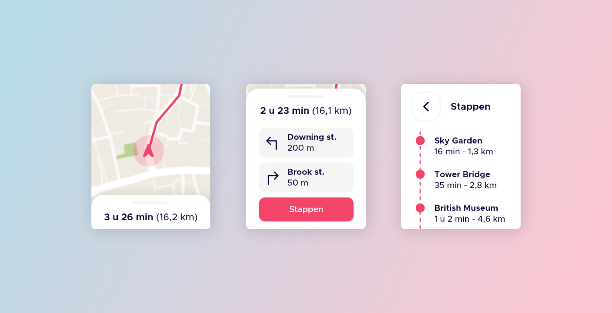

Cityplanner
CityPlanner is een multi device ervaring die gebruikers helpt bij het plannen van hun stedentrip. Uiteindelijk is een screenflow gemaakt waarin de functionaliteiten van het product op alle verschillende apparaten in kaart is gebracht.
De opdracht
Binnen dit project diende een nieuwe multi device ervaring te worden bedacht en ontworpen voor een specifiek activiteit. Er moet hierbij goed worden gedacht over welk device het meest geschikt is voor welke stappen binnen dit activiteit. Uiteindelijk dient de oplossing gevisualiseerd te worden in een screenflow zodat de verschillende functionaliteiten van het product op alle gebruikte apparaten volledig in kaart zijn gebracht.
Het resultaat
Uiteindelijk is een product ontworpen waarmee gebruikers hun stedentrip kunnen plannen. Vanaf huis kunnen gebruikers op hun desktop bepalen wat zij op hun reis willen zien en welke routes zij willen lopen. Eenmaal aangekomen in de betreffende stad kan de eerder uitgestippelde route worden gevolgd op een mobiel device. Omdat gebruikers niet constant hun mobiel in hun handen willen hebben kan ook worden geswitcht naar een smartwatch. Bij het ontwerpen van de verschillende schermen is veel focus gelegd op de gebruikerservaring, door het toepassen van verschillende filters en de focus te leggen op visualisatie is geprobeerd de ervaring zo gemakkelijk en prettig mogelijk te maken.
Bekijk het proces 